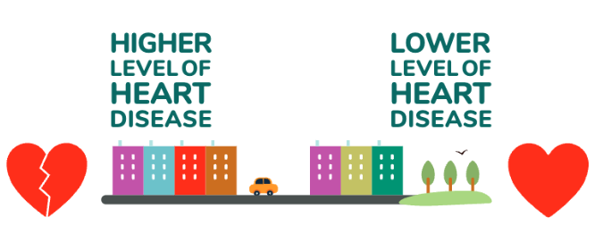
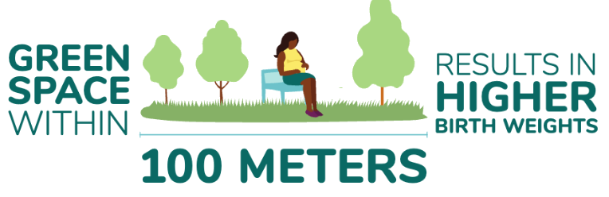
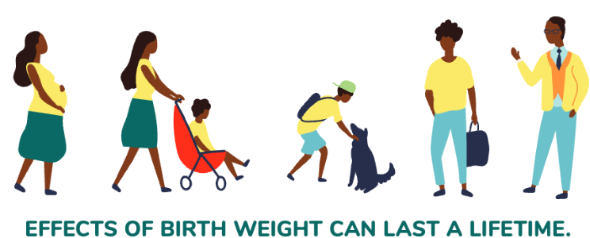
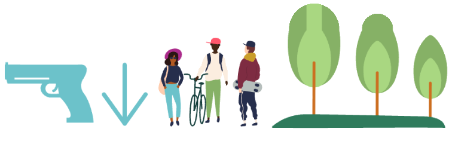
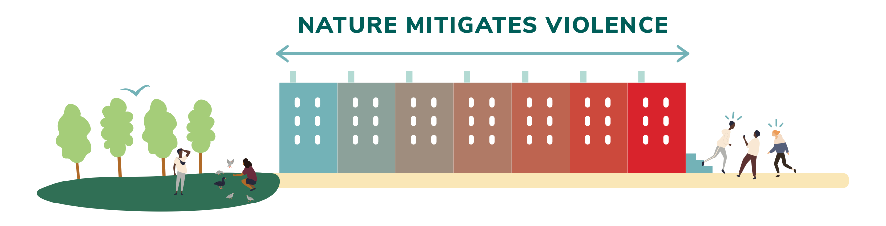
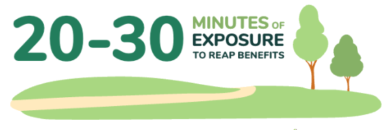
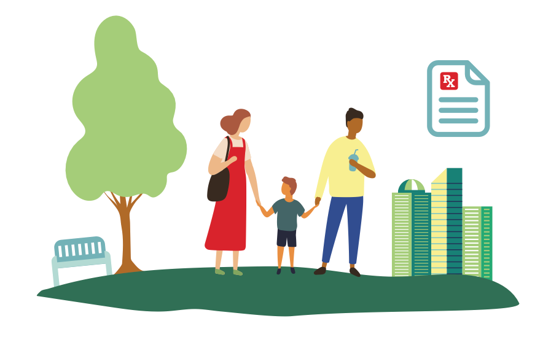

Ms. Johnson, as I will call her, was a 38-year old woman who came to the emergency department with chest pain. My team and I conducted a thorough workup to look for a heart attack, a blood clot in her lungs, or any other life-threatening illness. With negative results in hand, I sat down to talk with Ms. Johnson about her symptoms and make sure we hadn't missed anything. She shared that she was under a lot of stress, feeling the weight of significant family responsibility and few resources. While I could not provide immediate relief for her situation, I did advise her to speak with her doctor about talking to a psychologist. I also asked her if she ever spent time outside in nature. She said no, that she never felt she had time to visit the park near her house. I shared with her what I have learned through my research—about nature's power to heal—and encouraged her to give nature a try.
I will never know what happened to Ms. Johnson—did she go outside? Did it help? In my work as an emergency medicine doctor, I care for many people suffering the downstream effects of poverty, discrimination, and the resultant life stress. I have seen first-hand the relationship between one's neighborhood environment and their health. This has been the motivation for my research—understanding how we can modify the neighborhood environment to promote health and how I came to be a believer in nature.
Admittedly, I was at first a skeptic. Parks, trees, trails, green schoolyards—nice-to-have amenities but not fundamental to the health of a community. Science—including my own—slowly shifted my thinking. In some ways, the nature-health connection is as old as time; it is only recently in human evolution that we live apart from nature in our built up cities. Researchers are now catching up, pushing the envelope beyond mere associations to showing actual causality between nature and health. This report highlights what we know about nature and health in urban areas, and aims to push nature to the center of our conversation about what it means to create healthy, thriving cities.
What is nature?
Think fast: You are standing in nature. What do you see? An expansive wilderness; a national park; an undisturbed forest? Surveys have shown that when most of us think of nature, spaces filled with green that help us unwind and disconnect—we envision something removed. Something grand of scale. A remote destination.
We don't necessarily think of a singular carpet of grass rooted and flourishing where an abandoned building once stood; a clutch of trees; or a pocket park tucked within a bustling city neighborhood. Broadening how we define nature—especially in the urban context—may be vital to fully experiencing its benefits in our everyday lives.
Recent discoveries have in fact shown us that nature's power to heal—both our physical and mental health, and the health of our communities—can happen in a neighborhood park; a community garden; even that aforementioned square of grass that occupies the footprint of an abandoned city lot. This is good news for the 80 percent of Americans living in metropolitan areas, those whose daily lives will bring them into contact with these modest versions of nature far more than the wild.
It's this more small-scale—and thus oftentimes attainable—version of nature that we will be focusing on in this report. Think trees, pocket parks, greened vacant lots, community gardens, trails, and green school yards.
What we know
An increasing number of diverse research disciplines are now immersed in understanding the nature-health connection: social scientists to epidemiologists, neuroscientists to physicians. As a result, the growing body of scientific evidence is gradually nudging nature into the realm of public health and traditional medicine as a tool healthcare providers can use to promote healthy living. This is evidenced through the development of therapeutic gardens in hospital settings and physician-administered nature prescription programs. A decided shift is afoot.
This report, a collaboration between Nature Sacred, a non-profit dedicated to supporting and growing the number of small, accessible urban green spaces, Dr. Eugenia South, a physician-scientist with expertise in the health benefits of nature, and the Pennsylvania Horticultural Society, compiles some of the most recent evidence underscoring the health benefits of nature. While not an exhaustive review of the full body of existing literature, we highlight high-impact studies across a range of outcomes. We present the research in such a way that time-crunched urban planners, administrators and decision-makers, healthcare providers and public health officials, and community foundations can gain a quick briefing, absorbing key facts that help strengthen and inform decisions around the development of green infrastructure in cities and communities, and suggest ways to connect people with nearby nature.
Roughly 80 percent of the US population lives in urban areas. And those who live in these more densely populated and oftentimes congested environments are at a higher risk of experiencing mental health issues. Researchers have found, though, that within these urban areas, residents who have more green space near their homes report significantly lower symptoms of depression, stress and anxiety. This is the case even when controlling for a number of other factors that could have influenced their results; think education level, household income, and neighborhood-level socioeconomic factors. It appears that nature is not just a marker for a well-off neighborhood; rather there is something about green space itself that makes us healthier.
Likewise, a study in Denmark evaluated the amount of nature near the childhood homes of more than 900,000 adults. Compared to those who grew up with high levels of nearby nature, those who grew up with less green space were at a higher risk of developing psychiatric disorders—including mood disorders, substance abuse, and schizophrenia—as adults. This held true within rural areas, suburban areas, and of course, urban areas.
While individual treatments—like therapy and medications—will always remain a cornerstone of addressing mental illness, the authors of both studies suggested greening as a low-cost means to help address mental health on a population level.
Depression
More than 16 million Americans experience an episode of clinical depression each year; many more have feelings of depression that don't meet the clinical definition. And a large percentage of these go untreated, especially people from low-resourced neighborhoods.
In Philadelphia, PA, Dr. South and her colleagues conducted a first-of-its-kind study to see if planting new micro-green spaces in previously urban vacant lots could impact health. This study, a randomized controlled trial—the highest level of scientific evidence—found that people living near these new green spaces felt less depressed and had overall improvements in their mental health; people who lived near areas that did not get new green space had no improvements in their mental health. These effects were the strongest for people living in neighborhoods below the poverty line.
A United Kingdom-based study of over 7,500 pregnant women found that those who had the most green space near their homes were 18-23 percent less likely to experience depressive symptoms, compared to those who lived in areas with the least amount of green. Similarly, scientists in Australia demonstrated that people who visited a park for 30 minutes or more had significantly fewer cases of depression. Research from cities around the world is pointing to nature as an antidote to the mental strain of urban living.
Stress
While stress is a natural part of the human existence, too much stress can lead to a litany of negative consequences—from lower productivity at work to negative social interactions to physical problems like asthma exacerbations, ulcers, and even heart disease. A 2011 study by the American Psychological Association found that most Americans are suffering from moderate to high stress.
When under stress, our bodies release hormones like adrenaline, causing our hearts to beat faster, our breathing to become more rapid. This is good if we are in danger or need to focus on a high-intensity task, but becomes harmful when occurring day in and day out. But just as doctors identify a healthy diet and physical activity as a means to combat stress, nature, too, is being added to the list. Stress reduction, in fact, is one of the key mechanisms through which nature is thought to impact health.
A study in Philadelphia, PA, by Dr. South showed that simply walking past newly-greened vacant lots significantly decreased heart rate, a marker of acute stress. Heart rate did not change in a control group when walking past non-greened areas. Multiple studies have drawn similar conclusions—spending time in or walking through green space reduces heart rate, blood pressure, and other physiologic markers of stress.
Researchers in Oakland, CA, have also found that weekly physician-prescribed group park visits increased resilience and reduced stress among low-income parents and families. Parents also reported decreased feelings of loneliness. Authors pointed to the need among pediatricians for community resources, like nature exposure, to help address stress in children.
Mental fatigue
"Mental fatigue," that state of exhaustion caused by prolonged periods of focused cognitive activity, is a side effect of modern society. This tiredness of the brain, as it's sometimes called, can manifest in a number of ways—for example, difficulty concentrating and managing our moods, and even leading to angry outbursts or violent behavior.
The latter was investigated in a study of public housing buildings in Chicago, IL. Researchers found that people with more small-scale nature in their immediate living environment reported lower levels of mental fatigue and fewer episodes of aggressive behavior compared to residents in less verdant surroundings.
Rumination—a pattern of harmful thinking in which the mind gets stuck in a loop of negative, self-related thoughts that can be difficult to break—can lead to depression and other mental illness. Taking a walk in nature, but not in a built environment, has been shown to help reduce this type of negative thinking. Brain scans of study participants who walked in nature showed reduced blood flow to the part of the brain that controls negative emotions. Walking in nature literally changes your brain.
Burnout & wellness
Burnout, characterized by symptoms of emotional exhaustion, depersonalization, and loss of personal efficacy, has skyrocketed among healthcare providers—namely nurses and doctors. The negative consequences are far-reaching—impacting personal wellbeing and relationships, quality of patient care, and costs to the health system. Some employers are exploring innovative ways to leverage nature to mitigate burnout and enhance wellness. In Portland, OR, a hospital created a micro-green space at the threshold of an intensive care unit, encouraging staff to use the space during their workday. A study that looked at symptoms of burnout in nurses who took their breaks outdoors versus indoors found that the former had fewer symptoms of emotional exhaustion and depersonalization.
{{ r.detail }}
{{ r.source }}
Cardiovascular health
Cardiovascular disease is the leading cause of death in the US and affects nearly half of all adults. Very recent research is pointing to nature as a potential population-based approach to reducing heart disease. Researchers in Miami, FL, investigated the relationship between greenness on the block people live and four types of cardiovascular disease (heart attacks, coronary heart disease, heart failure, and irregular heartbeat). People living on blocks with higher levels of greenness had significantly lower levels of all four types of heart disease. This study demonstrated the immediacy of nature in the place people often spend the most amount of time—their home.
In Toronto, CA, researchers quantified the cardiovascular health benefit of living on a street with high-density tree canopy. In short, people who live on a street with 11 or more trees had significantly lower cardio-metabolic disease—including diabetes, hypertension, and heart attacks. The researchers report the effect is equivalent to an annual income increase of $20,000 or moving to a neighborhood with $20,000 higher median income. A study underway in Louisville, KY, is evaluating the impact of planting mature trees on the future prevention of heart disease. This randomized controlled trial—that highest level of scientific inquiry—will provide us with the most robust evidence of trees on health to date.

Obstetrical outcomes
While many of the benefits we've referenced so far apply directly to children, the fact is the benefits of nature exposure can begin well before a child takes its first breath.
Birth weight is an important early indicator of infant health. The harmful repercussions of low birth weight are broad, ranging from infant mortality to adult mental and physical illness. While there are many factors that affect birth weight, researchers have found that expectant mothers who live in areas with more tree canopy experience fewer "small for gestational age" births than those who live in more tree-barren environments.
Other studies too have explored the relationship between maternal exposure to nature and birth weight. A review article found that residential greenness within a 100-meter buffer was associated with higher birth weights. The authors also noted that the impact was more prevalent among the mothers who were less educated, suggesting again that nature may play a role in buffering the ill health effects of life-stress.


{{ r.detail }}
{{ r.source }}
Social cohesion
When we talk about community health, we commonly are referring to the health of a set of individuals grouped collectively based on shared geography. In recent years, there's been much talk of the growing fragmentation of society—the erosion of community connectedness, of social cohesion—and the subsequent negative impact on health.
In fact, greater social cohesion—which has been defined as the existence of positive social relationships and a sense of belonging in one's neighborhood—is considered by many a critical component to a community's ability to achieve maximal health.
So where does nature enter the picture?
One means to foster social cohesion within a community is via shared spaces. Social scientists have studied the relationship between the presence of green space in particular and the amount of social contact among community residents. What we've learned is that less green space in people's living environment coincides with feelings of loneliness and a perceived shortage of social support. More green space has been linked to a greater sense of belonging and cooperation between neighborhoods. In fact, in the previously mentioned study of greening in Philadelphia, people living near newly-greened spaces reported going outside to socialize more with neighbors.
Crime & perceptions of safety
The health of a community and its members is impacted not only by sickness and disease, but also by crime.
In the study referenced earlier in the report—involving the greening of vacant urban lots in Philadelphia—police-reported crime was analyzed to determine the impact on gun violence. Violent crime dropped in the vicinity of the treated lots up to 29 percent in the poorest neighborhoods—while residents living in proximity to these lots reported feeling much safer.
Vacant lot greening is a relatively low-cost intervention—with cities spending approximately $1.75 per square foot to green and an even lower cost to maintain. A separate cost evaluation of the greening intervention found that for every dollar spent on greening, the return on investment to the taxpayer and to society for the prevention of firearm violence was $26 and $333 respectively.
Other research has indicated a link between low tree canopy and increased crime. Social scientists studied a vanishing tree canopy in Cincinnati, OH—the result of an infestation of invasive tree pests—and observed an association with increased theft, breaking and entering, property crime incidents and elevated numbers of simple assaults, felony assaults, and violent crimes after trees were destroyed.
And in yet another study alluding to the role nature may play in helping tamp gun violence, Dr. South was part of a team of fellow researchers who documented an association between tree canopy and lower levels of adolescent gun assault in Philadelphia, PA.


{{ r.detail }}
{{ r.source }}
While nature is essential to every community, access is not equal. And oftentimes, the neighborhoods that arguably need nature most—those grappling with the realities of entrenched poverty and legacies of segregation—are the ones with less access to parks and tree canopy. The implications are far-reaching, including on air quality and climate; a recent analysis showed that summer temperatures could vary by as much as 20 degrees across various parts of the same city, depending on how many trees were in a neighborhood.
Important to note is that "access" to green spaces doesn't always equate to the presence of green space, particularly in high-crime neighborhoods. A team of researchers studying nationwide disparities in access to parks and green spaces looked at how social access barriers—issues like safety, traffic, and walkability—could often influence actual use of the spaces.
And still, other studies have indicated that income-related inequality in health may be less pronounced among populations exposed to greener environments.
of variation in summer temperature across parts of the same city, depending on how many trees are in a neighborhood.
How much nature, and how often?
With our deepening understanding of nature's therapeutic value, researchers across the globe are digging deeper to put a finer point on the question: How often and for how long does one need to spend time in nature to reap the health benefits? The short reply is that we don't yet have a certain answer and need more research before definitive guidelines are established. This said, several recent studies are suggesting an early answer.
Two separate papers published within the past year both suggest roughly the same amount of time per visit—just 20-30 minutes of exposure—for measurable benefits to manifest. One of these studies found that 30 or more minutes spent in an outdoor green space could reduce the population prevalence of depression and high blood pressure by up to 7 percent and 9 percent respectively.
The second, a small US-based study involving urban dwellers, reported that people who spent just 20 minutes in an outdoor place where they felt connected to nature experienced a drop in stress hormones.
Another study looked at the cumulative time spent in nature per week and found that 120 minutes a week was a threshold to convey health and wellbeing benefits. This could be over one visit or multiple visits.

{{ r.detail }}
{{ r.source }}
While physicians and researchers continue the quest to more deeply understand questions of dose and mechanisms, ample evidence already indicates that nature is essential to our wellbeing. By building safe and accessible green space into our neighborhoods, we have the potential to significantly improve the lives of people and communities. But we need to act.
{{ a.what }}

- {{ ref.n }} {{ ref.text }}
Nature Sacred
Nature Sacred exists to inspire, inform and guide communities in the creation of public green spaces—called Sacred Places—designed to improve mental health, unify communities and engender peace. For over 25 years, Nature Sacred has partnered with over 130 communities across the country to infuse nearby nature into places where healing is often needed most: distressed urban neighborhoods, schools, hospitals, prisons and more. Through a collaborative, community-led process and an evidence-based design model, each Sacred Place is bonded together by a common goal: to reconnect people with nature in ways that foster mindful reflection, restore mental health and strengthen communities. As each community imagines its own space, the design becomes a unique reflection of the community's culture, story and place—making it inherently sacred to them.
Pennsylvania Horticultural Society
The Pennsylvania Horticultural Society, an internationally recognized nonprofit organization founded in 1827, plays an essential role in the vitality of the Philadelphia region by creating healthier living environments, increasing access to fresh food, growing economic opportunity, and building deeper social connections between people. PHS delivers this impact through: comprehensive greening and engagement initiatives in more than 250 neighborhoods; an expansive network of public gardens and landscapes; year-round learning experiences; and the nation's signature gardening event, the Philadelphia Flower Show.
Talk with us about nature in your city.
We work with cities, health systems, funders and community groups putting this evidence to use. Tell us what you're planning.